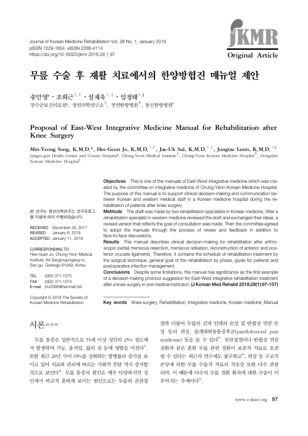

Proposal of East-West Integrative Medicine Manual for Rehabilitation after Knee Surgery
Song MY, Jo HG, Sul JU, Leem J
Journal of Korean Medicine Rehabilitation 28(1):97-107

첫 장 · 오픈액세스First page · open access
논문 소개Summary
무릎 수술 뒤 재활을 위한 동서협진 매뉴얼입니다. 같은 병원 협진위원회가 만든 연작 가운데 하나로, 한의 재활의학 전문의 두 사람의 초안을 양방 재활의학 전문의가 검토하고 논의를 거쳐 위원회가 채택했습니다. 관절경적 반월상연골 부분절제술과 반월상연골 재봉합술, 전·후십자인대 재건술 뒤의 재활을 다루며 수술 기법에 따른 재활 일정과 시기별 목표, 환자 안내, 수술 후 감염 관리를 담았습니다. 저자들은 몇 가지 한계가 있음에도 한 의료기관에서 무릎 수술 후 동서 통합 재활치료의 의사결정 절차를 제안한 첫 사례라는 데 의의를 두었습니다.
A manual of East-West integrative medicine for rehabilitation after knee surgery. One of a series produced by the same hospital's integrative medicine committee, it was drafted by two Korean medicine rehabilitation specialists, reviewed by a Western medicine rehabilitation specialist, and adopted by the committee after discussion. It covers rehabilitation after arthroscopic partial meniscectomy, meniscal refixation and reconstruction of the anterior and posterior cruciate ligaments, setting out the rehabilitation schedule by surgical technique, general goals by phase, patient guidance, and management of postoperative infection. The authors locate its significance, despite acknowledged limitations, in being the first proposed decision-making protocol for East-West integrative rehabilitation after knee surgery within a single institution.
인용Cite
Song MY, Jo HG, Sul JU, Leem J. Proposal of East-West Integrative Medicine Manual for Rehabilitation after Knee Surgery. Journal of Korean Medicine Rehabilitation. 2018;28(1):97-107. doi:10.18325/jkmr.2018.28.1.97